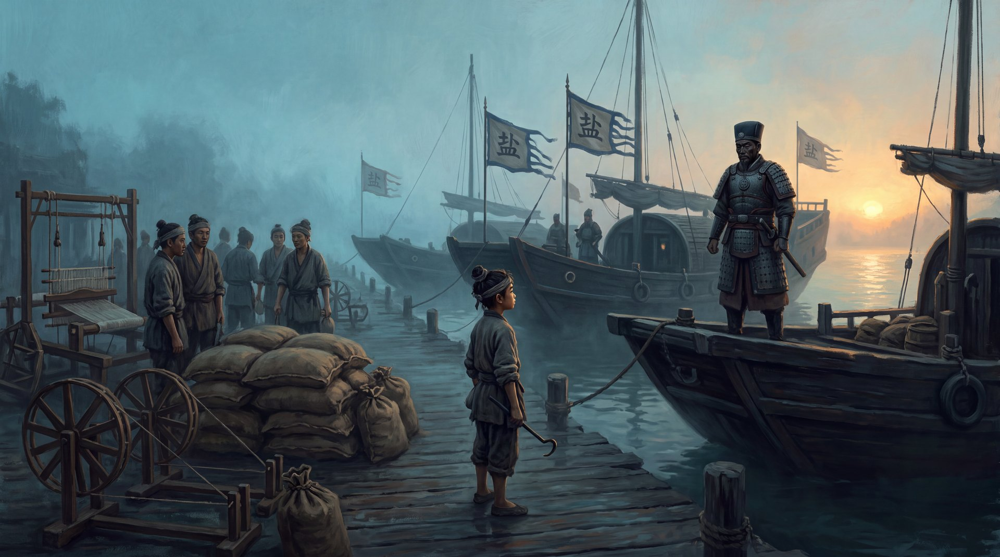

盐引与棉布

三艘大周的盐旗船靠岸的时候，百曲的灶烟正烧得旺。
脱里不花第一个跳下船。他换了一身官服，黑底皂靴，腰上挂着铜牌，半边脸上的烫疤在日光下泛着红。身后跟着两个横眉立目的官差，再后面，是一个穿青衫的文吏——那是隆平府真正派来的盐课官，姓顾，四十来岁，一张白净的账房脸。
周保长早等在码头上，腰弯得像个虾米：“顾大人！千户大人！百曲灶户，都给您叫齐了——”
“叫齐？”脱里不花咧嘴一笑，“那姓火的呢？”
“火家？”周保长一愣，“火家刚入籍，是小户……”
“小户？”脱里不花慢悠悠地往村里走，“本官听说，百曲这几夜，半夜灶烟不歇。小户，好大的胆子，夜里偷熬盐。”
他这话一出，码头边围着的灶户们齐齐一颤。
偷熬盐。私盐。那是要掉脑袋的罪名。
火焱从人群里走出来的时候，九岁的身量，站在一群大人中间，像一根插在田埂上的芦苇秆。他不慌，先对顾盐官规规矩矩行了个礼，又对脱里不花笑了笑：
“千户大人说笑了。百曲的灶户，哪家有胆子偷熬盐？不过是这几日天潮，灶潮了，夜里多烧两把火，把灶烘干罢了。”
“烘干？”脱里不花眯起眼，“那烧出来的盐呢？”
“烧干了灶，盐自然是不出的。”火焱眨眨眼，“大人若不信，可去各家灶上看看——锅是干的，灶是温的，一点盐花都没有。”
他说得坦荡。因为这是真话——那几夜烧出来的盐，早就连夜搬进各家地窖，盖上了稻草。
顾盐官眉头微动，饶有兴致地看着这个孩子。他没说话，先踱到陈老爹家灶前，伸手在锅里一抹——干爽，无盐。又走到火家灶前，那口新灶砌得规整，灶膛里余烬温热，锅底干干净净。
“火候不错。”顾盐官忽然开口，声音不咸不淡，“这灶，砌得好。”
“大人好眼力。”火焱心里一动，面上不显，“灶膛深浅三分，火路宽窄两指，灰道留一条——煮盐的灶，火候对了，盐才白。这是下沙老辈传下来的法子。”
“下沙的法子？”顾盐官看了他一眼，“你一个九岁的小囡，懂下沙的法子？”
“我家老底子，就是下沙的灶户。”火焱说，“我爹在松江盐运司抄过册子，认得陈椿陈盐司的《熬波图》——筑摊场，摊灰，开河引潮，堆灰淋灰，运卤入团，上拌煮炼。煮盐八道工序，最后一道'上拌煮炼'，最讲火候：火大了盐发苦，火小了卤沉底。”
他顿了顿，补了一句：“《熬波图》里写得明白，一锅卤，火候到了，出盐白如雪，颗大味正；火候不到，出盐发灰，苦得卖不出去。”
码头边安静下来。
灶户们面面相觑。顾盐官的眼神变了，从“看个热闹”变成了“咦”。
《熬波图》——下沙盐司陈椿的私著，向来只在盐场官署里流传，市面上根本见不着。一个逃难来的九岁孩子，张口就是八道工序，闭口就是火候苦盐——这已经不是“小囡机灵”能解释的了。
脱里不花的脸沉下去：“顾大人，别听他胡扯！这火家来历不明，八成是——”
“千户大人。”火焱忽然打断他，声音不大，却清清楚楚，“您说我家来历不明。那您怀里那封隆平府的信，是从废团那边递来的吧？”
脱里不花的瞳孔猛地一缩。
“废团？”顾盐官转头，“什么废团？”
“下沙西边那座废弃的团场。”火焱说，“塌了半边的土墙，锈了的大铁盘，芦苇都长到墙根里了。我去那儿捡柴，看见里头有人——七八个汉子，带着刀，码着一垛盐包。”他看着脱里不花，一字一句，“我年纪小，不认得人，可我认得盐。那盐包的封口，打的不是官引的印子。”
码头上死一样的静。
私盐。一垛私盐，七八个带刀汉子，藏在一座废弃的团场里——而这位“新上任”的千户大人，恰好从那里接了封信。
顾盐官是账房出身，最懂账。他看了脱里不花一眼，那一眼，让脱里不花后背的汗一下子下来了。
“大人，”脱里不花急道，“一个孩子的胡话——”
“是不是胡话，查过便知。”顾盐官慢条斯理，“不过，在查之前，本官倒想先问这位火家小公子一件事。”他转向火焱，“你说你会看火候，会煮盐——那你说说，百曲这地方，除了盐，还能种点什么？”
火焱心里一松。他知道，这一局，他赌赢了。
顾盐官不在乎谁收盐课，他在乎的是：能不能多收盐课。
“种棉。”火焱说，“大人可听过乌泥泾？”
“乌泥泾……”顾盐官眼神一动。
“元贞年间，乌泥泾有个黄姓妇人，从海南崖州回来，教人搅车轧籽、绳弦弹棉、三锭纺车——松江的棉布，如今卖到'衣被天下'。”火焱说，“百曲的盐碱地，种粮不成，种棉却正合适。盐要煮，布要纺；煮盐是男人的活，纺布是女人的活——大人想想，一户人家，男人夜里煮盐，女人白日纺布，一年到头，能出多少税？”
顾盐官的眼睛亮了起来。
一个账房，看见的不是布，是税。
“盐课之外，再加布课。”火焱轻声说，“大人回隆平府，交上去的就不是一张灶田册，而是一份新政——百曲试行，棉盐并举。这样的政绩，大人说，值多少盐课？”
码头边，周保长听得目瞪口呆，灶户们听得云里雾里，只有顾盐官，看着这个九岁的孩子，看了很久很久。
“好。”顾盐官忽然笑了，“好一个棉盐并举。”
他转过身，对脱里不花拱了拱手：“千户大人，废团那边，本官要亲自去查验。这百曲的灶田——”他顿了顿，“本官觉得，火家的册子，倒是可以先立起来。”
脱里不花站在原地，脸上的疤一跳一跳，手按在刀柄上，指节捏得发白。
可他终究没敢拔刀。
官差是顾盐官的人。三艘船，是顾盐官的船。他脱里不花，说到底不过是个挂着铜牌的新任盐差——而对面那个九岁的孩子，已经当着所有人的面，把他的私盐，钉在了岸上。
“火家。”他几乎是从牙缝里挤出这两个字，“好。好得很。”
他转身，大步走向码头。
“大人慢走。”火焱在他身后，恭恭敬敬地补了一句，“废团那垛盐，要是查出来是官盐，那便是小民看走了眼；要是查出来不是——”他顿了顿，“大人手里的刀，可得握稳了。”
脱里不花的背影僵了一瞬，随即登船，帆起，船离岸。
三艘盐旗船，灰溜溜地走了。
码头上，灶户们这才敢喘气。陈老爹一把抓住火焱的胳膊，手都在抖：“小囡……不，火家哥儿……你，你方才说的那些，是真的？”
“哪句？”
“那什么……乌泥泾，三锭纺车……”
“真的。”火焱说，“陈老爹，明日让海妹她娘来我家一趟，我有话跟她说。”他看着河对岸渐渐远去的船影，忽然觉得丹田里那团火，烫得厉害，“布，是真能纺的。黄婆婆教出来的活，松江人做了几十年了。”
系统之声在他耳边响起，带着一丝压不住的得意：
【御灶诀·圆满】
修为：赤火九转·第一转·灶火（圆满）
火种纯度：乙上
传承碎片：1/7
提示：灶火圆满，燎原境门槛已松——火候既成，当及于野。
“及于野……”火焱喃喃念着这三个字，蹲下身，从灶膛里扒出一根烧红的柴头，在泥地上划了一道。
一道火星，从柴头落进枯草里。
“嗤”地一下，火苗蹿了起来，烧向芦苇荡的方向。
燎原。
他忽然明白系统为什么选在今天给他这句话了——今天，百曲的灶户们看着他一个九岁的孩子，把带官身的仇人赶出了村口。火，在百曲人的眼里，第一次不再是“烧饭烧盐”的玩意儿。
是胆。
夜里，海妹她娘提着一篮子棉线，摸到火家来。火焱蹲在灶前，教她搅车的道理，教她三锭纺车的门道——他上辈子背过的书，这辈子，终于要用在一根线上了。
灶膛里的火，赤红赤红地跳着。
“火家哥儿，”海妹她娘临走时，忽然回头问了一句，“你方才在码头上，胆子咋那么大？九岁的娃，对着官，不抖？”
火焱想了想，指了指灶膛：“我娘说，我老底子是烧火的。烧火的人，火候到了，胆子就大了。”
他顿了顿，又补了一句，像是说给自己听的：
“再说，怕，也没用。这火，总得有人烧起来。”
· 本章完 ·